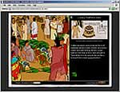
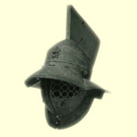

| |
The British Museum websites are written to support the National Curriculum for History and other subjects. They include printable teaching resources. Also included here are recommended external sites.
British Museum Sites
KS2
KS3+
External websites
KS2
KS3
Further/Higher Education
British Museum Sites: KS2
Children's COMPASS |
|
 children's COMPASS children's COMPASS
An introduction to the Museum for KS2 children and their teachers.
Includes teaching resources, games, printable activities, children's Noticeboards and Ask the Expert facility.
|
|
 Game:
The Mummy's tomb Game:
The Mummy's tomb
Read about the Rosetta Stone, then solve the hieroglyphs to open the tomb.. if you dare.
|
 Tour: Fish Tour: Fish
Art and design resource for KS2-4. With teaching activities and colour photopack.
|
|
Competition Winners:
Weighing the Heart
by Jasmine Quraishi,
aged 9
|
Competition Winners:
The Lord of the Dance
by David Waker,
aged 12
|
Ancient Civilizations |
| A series of websites designed to support the Key stage 2 and 3 curricula.
|
|
Ancient Civilizations
Make connections between civilizations across the world and through time.
With staff room.
|
|
 Ancient Egypt Ancient Egypt
Build a pyramid, learn some hieroglyphs, explore the inside of a mummy.
|
|
 Mesopotamia Mesopotamia
Piece together some cuneiform tablets, be a farmer and irrigate your fields, play the Time Challenge..
|
|
Ancient India
Explore the archaeological site of Mohenjo-Daro, and investigate the sculptures of the Amaravati Stupa… |
|
Ancient China
Navigate the tomb of a wealthy lord, learn about the legendary Pangu and Nuwa and even try silkworm farming!
|
|
|
British Museum Sites: KS3
Ancient Civilizations |
| A series of websites designed to support the Key stage 2 and 3 curricula. |
|
Ancient Civilizations
Make connections between civilizations across the world and through time.
With staff room. |
|
Early Imperial China
Explore the British Museum student's room to find a slide show of the Great Wall and original sources describing the First Emperor's reign… |
|
Mughal India
Take a tour of the Taj Mahal, explore the methods of Mughal miniature painting and delve into a Mughal coin cabinet… |
COMPASS

Over 5000 objects online with high quality images, background information and online Tours.
|
|

Tour: Gladiators and Caesars
A look at gladiatorial combat and chariot racing, the most important leisure activities of the Roman world. |
|
Tour: Native North America: The Stonyhurst Collection
This tour introduces Native North American art and culture and features some of the highlights of the Stonyhurst collection, acquired by the British Museum in 2003.
|
|
|

|
|


|